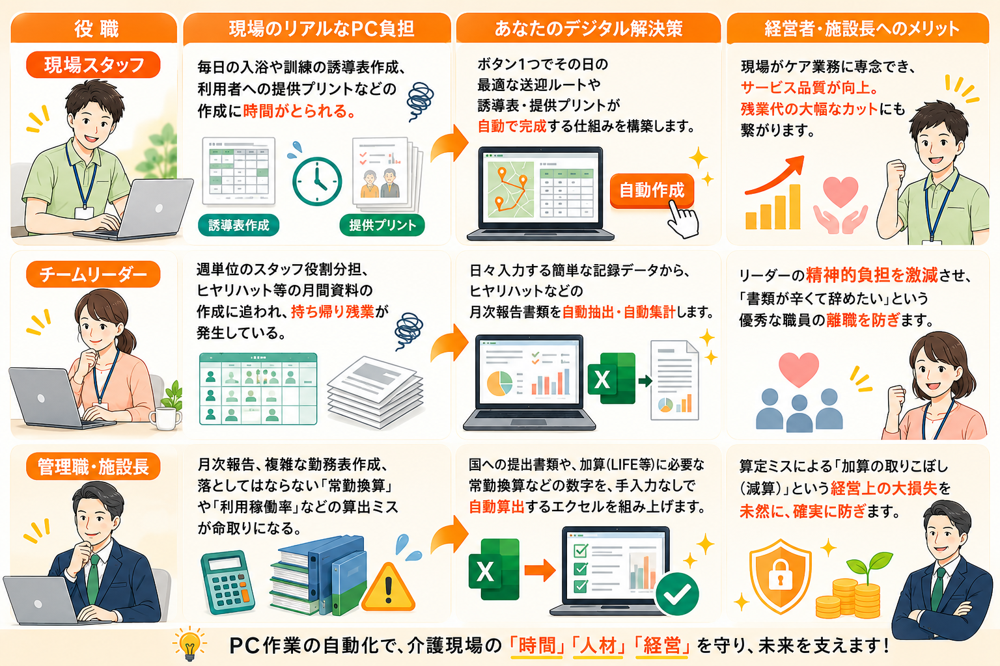

Troubles
現場のケアに集中したいのに、
PC作業で1日が終わっていませんか？
こんなお悩みを抱えていませんか？
- 毎日、翌日の準備のために同じデータのコピー＆ペーストを繰り返している。
- 毎月の計画書や報告書の作成で、本来の業務が圧迫され残業が当たり前に。
- 「自分がやらなきゃ現場が回らない」と業務を抱え込み、休みの日も電話が鳴る。
- 新しいITシステムは高額で手が出ないし、覚える暇もない。
- IT業者に頼もうにも、利用者の個人情報が多くて現状を説明しづらい。
痛いほどわかります。私も18年間、現場で泥水をすすってきた複合施設の管理者歴があります。
はじめまして。介護特化型・デジタル業務改善プロデューサーの羽室雄貴（hamちゃん）です。
私は長年、施設管理者として24時間365日オンの状態で走り続けてきました。「一番早く来て、一番最後に帰る」のが当たり前だと思っていました。
でも、ある日気づいたんです。1日は1440分しかない。その中で、純粋な自由時間はどれだけあるのだろうと 。
「仕事も大事。利用者さんも大事。でも、あなたの30分も同じくらい大事」
私は、現場のリーダーが『はよ帰ろ。』と定時に帰れる仕組みを作りたいと決意しました。
Solution
そのお悩み、介護現場のプロが
Excelで解決します！

羽室 雄貴
活動名：はむこばのhamちゃん
介護特化型・デジタル業務改善プロデューサー
About Me

管理者歴１３年の中で、毎日現場のケアをしながら終わらない書類仕事に追われ、夜遅くまでサービス残業をしていました。
「もっと手軽に書類が作れたら・・・。日々追われながら仕事をしたくない」あの時に感じた強い悔しさと、現場を良くしたいという思いが。私のデジタルサポートの原点です。
現場とマネジメントを生き抜いた18年の軌跡
福祉の原点
4年制福祉系大学を卒業し、理想と情熱を持って介護の業界へ。
現場での下積みと、リーダーへの抜擢
デイサービスの現場で介護の基礎を徹底的に叩き込む。3年目には生活相談員を任され、利用者様やご家族、地域のケアマネジャーとの強固な信頼関係を築く楽しさを知る。
怒涛の新規開設と異動
新規施設開設のスターティングメンバー、そして管理者に大抜擢。上半期はデイの立ち上げ準備、下半期は老健（介護老人保健施設）でのマネジメントを経験し、組織づくりの基盤を学ぶ。
10年間の継続と、激務の兼務時代
サービス付き高齢者向け住宅に併設する「通所介護」と「定期巡回・随時対応型訪問介護看護」の管理者を兼務。制度の狭間で激務をこなしながらも、通所介護の管理者として10年間、安定した事業所運営とチームマネジメントを継続。
複合施設の統括マネジメント
グループホーム、認知症対応型通所介護、通常の通所介護が一体となった「多機能複合施設」の管理者に就任。異なるサービス形態を統括し、地域に根ざしたケアの仕組み化を牽引。
新たな挑戦への旅立ち（フリーランス・起業）
18年間、介護の最前線で「現場・管理・立ち上げ」のすべてを経験。現場が抱える書類業務の多さ、マネジメントの孤独を誰よりも知っているからこそ、「介護現場の生産性を上げ、働く人を笑顔にする」ために独立を決意。現在はフリーランスとして, ケアマネジャーや事業所の業務効率化をサポートする冒険を開始。
Roadmap
今後のロードマップ（未来へのステップアップ）
個人事業主として、現場に密着した業務効率化・PC automation等のサポート体制を確立
サービスの拡大と社会的な信用度向上のため、「合同会社」を設立・法人化へ
SNS & Links
※カードをタップすると各外部サイト（別ウィンドウ）が開きます。
Contact
まずは無料相談からお気軽に。
どのような業務・PC作業で困っているかを教えてください！元管理者の目線でアドバイスします！
スマートフォンからであれば、下記のボタンをタップするだけで自動で友達登録可能です！お気軽にお問い合わせください！！